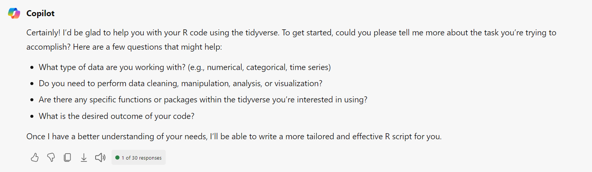

library(tidyverse)
# load in the data and just select the columns we will need
dat <- read_csv("include/data/smarvus_complete_050524.csv") |>
select(unique_id, age, gender, Q7.1_1:Q7.1_24, Q14.1_1:Q14.1_12)
# pull out demographic data
demo <- dat %>%
select(unique_id, age, gender) |>
drop_na()
# create statistics anxiety scale
STARS <- dat %>%
select(unique_id, Q7.1_1:Q7.1_24) %>% # select the STARS columns
filter(Q7.1_24 == 1) %>% # remove those who failed the attention check
select(-Q7.1_24) %>% # remove the attention check column
pivot_longer(cols = Q7.1_1:Q7.1_23, names_to = "item", values_to = "score") %>% # transform to long-form
group_by(unique_id) %>% # group by participant
summarise(stars_score = mean(score)) %>% # calculate mean STARS score for each ppt
ungroup() %>% # ungroup so it doesn't mess things up later
drop_na() # get rid of NAs so they don't cause us havoc
# Intolerance of Uncertainty.
IUS <- dat %>%
select(unique_id, Q14.1_1:Q14.1_12) %>% # select the BNFE columns
pivot_longer(cols = Q14.1_1:Q14.1_12, names_to = "item", values_to = "score") %>% # transform to long-form
group_by(unique_id) %>% # group by participant
summarise(ius_score = mean(score)) %>% # calculate mean IUS-SF score for each ppt
ungroup() %>% # ungroup so it doesn't mess things up later
drop_na() # get rid of NAs so they don't cause us havoc
# join it all together
dat_joined <- left_join(demo, IUS) |>
left_join(STARS)6 Writing Code with AI
This chapter closes the coding section because writing code with AI represents the highest-risk, highest-reward use case. By this point, you should be able to judge when AI suggestions are useful scaffolds and when they are dangerous shortcuts.
The best AI platform for writing code is arguably Github Copilot (or Super Clippy as my programmer friends like to call it) and there are also specialised packages that you integrate LLMs into RStudio. However, unless coding is the main part of your job, most people are likely to use AI through a generic platform so we’ll stick with regular Copilot.
If you have access to LinkedIn Learning (which you do if you are a UofG student or staff), I’d also highly recommend the short course Pair Programming with AI by Morten Rand-Hendriksen. It only takes 1.5 hours to work through and he covers using both Github Copilot and ChatGPT and has a nicely critical view of AI.
If you’ve worked through this entire book then hopefully what you’ve learned is that AI is very useful but you should also have a healthy mistrust of anything it produces which is why this chapter is the last in the coding section.
The number 1 rule to keep in mind when using AI to write code is that the platforms we’re using are not intelligent. They are not thinking. They are not reasoning. They are not telling the truth or lying to you. They don’t have gaps in their knowledge because they have no knowledge. They are digital parrots on cocaine.
6.1 The problem
The dataset used in this exercise is described in the paper Data from an International Multi-Centre Study of Statistics and Mathematics Anxieties and Related Variables in University Students (the SMARVUS Dataset) from the Journal of open Psychology Data.
The dataset is massive so as our first task, we want to write code that narrows it down and creates three different objects.
First, we want to create an object named
demothat has the demographic information, age and gender. Age data has transformed into categories (e.g., 18-21) for anonymisation purposes. The option ‘Implausible’ describes values that were 99 or higher or 17 or lower.Second, we want an object named
STARSwhich will represent each participant’s score on the Statistics Anxiety Rating Scale (STARS; Cruise et al., 1985). Each item describes a situation involving statistics such as “Doing an examination in a statistics course” (test and class anxiety), “Interpreting the meaning of a table in a journal article” (interpretation anxiety), or “Going to ask my statistics teacher for individual help with material I am having difficulty understanding” (fear of asking for help).Third, we want an object named,
IUSwhich will represent each participant’s score on the Intolerance of Uncertainty Scale – Short Form (IUS-SF; Carleton et al., 2007). The scale contains 2 subscales, Prospective Anxiety and Inhibitory Anxiety, each with 6 items. The Prospective Anxiety subscale includes statements such as, “The smallest doubt can stop me from acting”. The Inhibitory Anxiety subscale includes statements such as, “It frustrates me not having all the information I need”.
For the two scales, we need to pivot it to long-form and then calculate the mean score for each participant.
We would need this information if we wanted to try and answer questions like:
- What is the demographic make-up of the sample in terms of age and gender?
- How is statistics anxiety and intolerance of uncertainty related?
- Do men and women differ in their level of statistics anxiety?
But we’ll start with the wrangling and see how far we get.
NoteActivity 1
Create a new Quarto or Rmd document and run the below code in a new code chunk. This will load in the data and then it will create the three objects using the code I have written and the approach I have taken so that we can compare with how Copilot gets on.
This is such a large dataset that we will just select the columns we need, but bear in mind I have already made the task easier for the AI by doing so.
6.2 Prompting
Now we want to do some set-up to prompt the AI to help us write code that works and does what we want.
NoteActivity 2
In Copilot, enter the following prompt:
You are an expert R programmer. Help me write tidyverse-first code. Before writing code, ask any clarifying questions needed about data, objectives, constraints, and outputs.When you do write code:
Use tidyverse idioms (|>, dplyr, ggplot2, tibble), no deprecated functions. Comment clearly and explain non-obvious choices (e.g., NA handling, binning, model specs). Be safe and reproducible: no setwd(), no absolute paths, no silent package installs; show any set.seed() if randomness is used. Handle missing data explicitly and avoid destructive transformations.
When you input this starting prompt, there’s a good chance you’ll get something like the following:

6.3 Describing your dataset
As I may have mentioned once or twice in this book, there is no substitute for knowing your data. For the dataset provided here, your first step as an analyst would be to read the paper in full so that you understand how and what data was collected, the scales of measurement, and information about missing data etc.
In addition to this domain knowledge, you can also use information R provides about the dataset to help you.
summary() is useful because it provides a list of all variables with some descriptive statistics so that the AI has a sense of the type and range of data:
unique_id age gender Q7.1_1
Length:12570 Length:12570 Length:12570 Min. :1.000
Class :character Class :character Class :character 1st Qu.:2.000
Mode :character Mode :character Mode :character Median :3.000
Mean :3.229
3rd Qu.:4.000
Max. :5.000
NA's :457
Q7.1_2 Q7.1_3 Q7.1_4 Q7.1_5
Min. :1.000 Min. :1.000 Min. :1.000 Min. :1.000
1st Qu.:2.000 1st Qu.:2.000 1st Qu.:2.000 1st Qu.:2.000
Median :3.000 Median :3.000 Median :3.000 Median :3.000
Mean :2.696 Mean :2.817 Mean :2.858 Mean :2.687
3rd Qu.:4.000 3rd Qu.:4.000 3rd Qu.:4.000 3rd Qu.:4.000
Max. :5.000 Max. :5.000 Max. :5.000 Max. :5.000
NA's :458 NA's :453 NA's :451 NA's :457
Q7.1_6 Q7.1_7 Q7.1_8 Q7.1_9 Q7.1_10
Min. :1.000 Min. :1.000 Min. :1.000 Min. :1.00 Min. :1.000
1st Qu.:1.000 1st Qu.:2.000 1st Qu.:3.000 1st Qu.:1.00 1st Qu.:3.000
Median :2.000 Median :3.000 Median :4.000 Median :2.00 Median :4.000
Mean :2.424 Mean :3.167 Mean :3.841 Mean :2.03 Mean :3.647
3rd Qu.:3.000 3rd Qu.:4.000 3rd Qu.:5.000 3rd Qu.:3.00 3rd Qu.:5.000
Max. :5.000 Max. :5.000 Max. :5.000 Max. :5.00 Max. :5.000
NA's :467 NA's :461 NA's :454 NA's :457 NA's :459
Q7.1_11 Q7.1_12 Q7.1_13 Q7.1_14
Min. :1.000 Min. :1.000 Min. :1.000 Min. :1.000
1st Qu.:2.000 1st Qu.:1.000 1st Qu.:2.000 1st Qu.:2.000
Median :3.000 Median :2.000 Median :3.000 Median :3.000
Mean :2.698 Mean :2.583 Mean :3.374 Mean :2.654
3rd Qu.:4.000 3rd Qu.:4.000 3rd Qu.:4.000 3rd Qu.:4.000
Max. :5.000 Max. :5.000 Max. :5.000 Max. :5.000
NA's :461 NA's :454 NA's :462 NA's :459
Q7.1_15 Q7.1_16 Q7.1_17 Q7.1_18
Min. :1.000 Min. :1.000 Min. :1.000 Min. :1.000
1st Qu.:3.000 1st Qu.:2.000 1st Qu.:1.000 1st Qu.:1.000
Median :4.000 Median :3.000 Median :2.000 Median :2.000
Mean :3.608 Mean :2.711 Mean :2.362 Mean :2.461
3rd Qu.:5.000 3rd Qu.:4.000 3rd Qu.:3.000 3rd Qu.:3.000
Max. :5.000 Max. :5.000 Max. :5.000 Max. :5.000
NA's :452 NA's :463 NA's :457 NA's :460
Q7.1_19 Q7.1_20 Q7.1_21 Q7.1_22
Min. :1.000 Min. :1.000 Min. :1.000 Min. :1.000
1st Qu.:2.000 1st Qu.:2.000 1st Qu.:1.000 1st Qu.:2.000
Median :2.000 Median :3.000 Median :2.000 Median :3.000
Mean :2.612 Mean :2.734 Mean :2.576 Mean :3.048
3rd Qu.:4.000 3rd Qu.:4.000 3rd Qu.:4.000 3rd Qu.:4.000
Max. :5.000 Max. :5.000 Max. :5.000 Max. :5.000
NA's :453 NA's :458 NA's :458 NA's :463
Q7.1_23 Q7.1_24 Q14.1_1 Q14.1_2
Min. :1.000 Min. :1.000 Min. :1.000 Min. :1.000
1st Qu.:1.000 1st Qu.:1.000 1st Qu.:2.000 1st Qu.:3.000
Median :2.000 Median :1.000 Median :3.000 Median :4.000
Mean :2.314 Mean :1.161 Mean :2.927 Mean :3.465
3rd Qu.:3.000 3rd Qu.:1.000 3rd Qu.:4.000 3rd Qu.:4.000
Max. :5.000 Max. :5.000 Max. :5.000 Max. :5.000
NA's :460 NA's :1306 NA's :1497 NA's :1500
Q14.1_3 Q14.1_4 Q14.1_5 Q14.1_6
Min. :1.000 Min. :1.000 Min. :1.000 Min. :1.000
1st Qu.:2.000 1st Qu.:2.000 1st Qu.:2.000 1st Qu.:1.000
Median :3.000 Median :3.000 Median :3.000 Median :2.000
Mean :2.681 Mean :2.974 Mean :2.702 Mean :2.527
3rd Qu.:4.000 3rd Qu.:4.000 3rd Qu.:4.000 3rd Qu.:3.000
Max. :5.000 Max. :5.000 Max. :5.000 Max. :5.000
NA's :1500 NA's :1497 NA's :1499 NA's :1498
Q14.1_7 Q14.1_8 Q14.1_9 Q14.1_10
Min. :1.000 Min. :1.000 Min. :1.000 Min. :1.000
1st Qu.:2.000 1st Qu.:2.000 1st Qu.:2.000 1st Qu.:2.000
Median :3.000 Median :3.000 Median :3.000 Median :3.000
Mean :3.008 Mean :3.168 Mean :2.667 Mean :2.676
3rd Qu.:4.000 3rd Qu.:4.000 3rd Qu.:4.000 3rd Qu.:4.000
Max. :5.000 Max. :5.000 Max. :5.000 Max. :5.000
NA's :1498 NA's :1500 NA's :1499 NA's :1496
Q14.1_11 Q14.1_12
Min. :1.000 Min. :1.00
1st Qu.:2.000 1st Qu.:2.00
Median :3.000 Median :3.00
Mean :3.228 Mean :2.64
3rd Qu.:4.000 3rd Qu.:4.00
Max. :5.000 Max. :5.00
NA's :1496 NA's :1500 str() is also useful because it lists the variables, their data type, and the initial values for each variable. However, that means that you are giving it at least some of the raw data so you have to be very careful if you have sensitive / confidential data and you must ensure that any use of AI is in line with your data management plan. Using Copilot Enterprise means the data won’t be stored and used to train the AI further so it’s potentially the best option (which is not to say it’s safe or problem free, please be careful and critical!).
tibble [12,570 × 39] (S3: tbl_df/tbl/data.frame)
$ unique_id: chr [1:12570] "01057178" "0300b5f2" "03f6503b" "0601d699" ...
$ age : chr [1:12570] "18-21" "18-21" "22-25" NA ...
$ gender : chr [1:12570] "Male/Man" "Female/Woman" "Female/Woman" NA ...
$ Q7.1_1 : num [1:12570] 3 3 4 4 5 1 1 3 4 4 ...
$ Q7.1_2 : num [1:12570] 5 4 4 4 4 1 2 1 4 3 ...
$ Q7.1_3 : num [1:12570] 3 1 3 4 5 2 2 1 5 2 ...
$ Q7.1_4 : num [1:12570] 4 5 4 5 5 2 3 3 3 3 ...
$ Q7.1_5 : num [1:12570] 4 5 4 4 4 1 1 2 4 2 ...
$ Q7.1_6 : num [1:12570] 4 4 3 2 4 1 1 2 1 3 ...
$ Q7.1_7 : num [1:12570] 5 4 4 4 5 3 1 5 5 4 ...
$ Q7.1_8 : num [1:12570] 5 2 5 5 5 3 4 4 3 4 ...
$ Q7.1_9 : num [1:12570] 2 1 1 1 1 1 1 1 1 4 ...
$ Q7.1_10 : num [1:12570] 4 3 4 4 5 2 1 2 2 4 ...
$ Q7.1_11 : num [1:12570] 4 4 4 4 4 1 1 1 5 4 ...
$ Q7.1_12 : num [1:12570] 2 1 1 2 4 1 4 1 4 3 ...
$ Q7.1_13 : num [1:12570] 4 2 5 3 5 2 1 2 4 4 ...
$ Q7.1_14 : num [1:12570] 4 5 4 2 5 2 1 4 2 5 ...
$ Q7.1_15 : num [1:12570] 3 3 3 4 5 2 2 1 3 2 ...
$ Q7.1_16 : num [1:12570] 2 4 2 4 5 1 2 2 5 3 ...
$ Q7.1_17 : num [1:12570] 2 2 2 2 4 1 1 1 3 5 ...
$ Q7.1_18 : num [1:12570] 4 1 5 2 5 1 1 3 4 2 ...
$ Q7.1_19 : num [1:12570] 4 3 2 2 5 1 1 1 4 1 ...
$ Q7.1_20 : num [1:12570] 5 4 4 4 4 1 1 3 4 2 ...
$ Q7.1_21 : num [1:12570] 2 3 3 4 4 1 1 4 1 3 ...
$ Q7.1_22 : num [1:12570] 5 4 4 5 4 1 1 2 4 3 ...
$ Q7.1_23 : num [1:12570] 4 4 2 1 5 1 1 2 4 1 ...
$ Q7.1_24 : num [1:12570] 1 1 1 1 1 1 1 1 1 1 ...
$ Q14.1_1 : num [1:12570] 3 2 3 2 5 2 1 1 4 2 ...
$ Q14.1_2 : num [1:12570] 3 2 4 5 5 3 4 1 2 3 ...
$ Q14.1_3 : num [1:12570] 2 5 3 2 5 2 2 2 5 2 ...
$ Q14.1_4 : num [1:12570] 1 2 3 5 4 2 5 1 4 2 ...
$ Q14.1_5 : num [1:12570] 3 2 4 4 5 1 2 2 4 2 ...
$ Q14.1_6 : num [1:12570] 2 4 3 2 3 1 2 5 3 2 ...
$ Q14.1_7 : num [1:12570] 4 4 2 4 5 2 3 2 1 4 ...
$ Q14.1_8 : num [1:12570] 3 4 4 5 4 3 4 5 5 2 ...
$ Q14.1_9 : num [1:12570] 1 3 2 4 5 2 1 3 1 2 ...
$ Q14.1_10 : num [1:12570] 2 2 2 5 4 1 1 2 4 3 ...
$ Q14.1_11 : num [1:12570] 4 3 2 5 5 2 5 4 4 3 ...
$ Q14.1_12 : num [1:12570] 2 3 2 2 5 1 1 1 4 2 ...Finally, ls() provides a list of all the variables in a given object. It doesn’t provide any info on the variable type or sample, but that does mean it’s the most secure and depending on the task, this might be all the info you really need to give the AI. I would suggest starting with ls() and only scaling up if necessary (and your data isn’t sensitive):
[1] "age" "gender" "Q14.1_1" "Q14.1_10" "Q14.1_11" "Q14.1_12"
[7] "Q14.1_2" "Q14.1_3" "Q14.1_4" "Q14.1_5" "Q14.1_6" "Q14.1_7"
[13] "Q14.1_8" "Q14.1_9" "Q7.1_1" "Q7.1_10" "Q7.1_11" "Q7.1_12"
[19] "Q7.1_13" "Q7.1_14" "Q7.1_15" "Q7.1_16" "Q7.1_17" "Q7.1_18"
[25] "Q7.1_19" "Q7.1_2" "Q7.1_20" "Q7.1_21" "Q7.1_22" "Q7.1_23"
[31] "Q7.1_24" "Q7.1_3" "Q7.1_4" "Q7.1_5" "Q7.1_6" "Q7.1_7"
[37] "Q7.1_8" "Q7.1_9" "unique_id"
NoteActivity 3
Now we’re going to tell the AI about our dataset and what we’d like. For educational value, we’ll give it a purposefully brief description.
I have a dataset from a paper on statistics anxiety. I want to pull out the demographic information, age and gender and I want to calculate each participant’s Statistic Anxiety score and their Intolerance of Uncertainty
here are the variables in my data set
[1] “age” “gender” “Q14.1_1” “Q14.1_10” “Q14.1_11” “Q14.1_12” “Q14.1_2”
[8] “Q14.1_3” “Q14.1_4” “Q14.1_5” “Q14.1_6” “Q14.1_7” “Q14.1_8” “Q14.1_9”
[15] “Q7.1_1” “Q7.1_10” “Q7.1_11” “Q7.1_12” “Q7.1_13” “Q7.1_14” “Q7.1_15”
[22] “Q7.1_16” “Q7.1_17” “Q7.1_18” “Q7.1_19” “Q7.1_2” “Q7.1_20” “Q7.1_21”
[29] “Q7.1_22” “Q7.1_23” “Q7.1_24” “Q7.1_3” “Q7.1_4” “Q7.1_5” “Q7.1_6”
[36] “Q7.1_7” “Q7.1_8” “Q7.1_9” “unique_id”
The number of questions Copilot asks in response to this prompt really does hammer home my point that there is no substitute for knowing your data, I won’t copy them all here but you get the idea:
Which instruments are these items from?
- Are Q14.1_* the Statistics Anxiety items and Q7.1_* the Intolerance of Uncertainty items (or vice versa)?
- What are the exact scales used? For example, common options are: Statistics anxiety: STARS (Cruise et al.), SAM (Earp), or newer short forms. Intolerance of Uncertainty: IUS-27 or IUS-12 (Carleton et al.). The correct scoring (including reverse‑scored items) depends on the instrument and version.
Response scales and coding
- What are the response options and numeric mapping? For example, Likert 1–5 or 1–7, with higher numbers indicating more of the construct.
- Are any items reverse‑scored? If yes, please list them (e.g., Q14.1_3, Q14.1_7, …). If you are unsure, I can map once you confirm the instrument.
Missing data handling
- What rule should we apply per scale? Common options: Person‑mean imputation if ≤20% of items missing on a scale, else set the scale score to NA. Require complete data (no imputation). Impute with item median across participants.
- Please specify your preferred approach per scale.
Demographics
- Age: is it numeric years? Any range checks to apply (e.g., set implausible ages <16 or >100 to NA)?
- Gender: current values and required recode? For example, keep original categories, or recode to levels such as “woman”, “man”, “non‑binary”, “prefer not to say”, “other”. Any harmonisation rules you prefer?
NoteActivity 4
Again for educatoinal value, we’re going to be lazy and give it minimal information. The questions it asks you will be slightly different to the ones above but will hopefully similar enough that this response should still work. Reply to Copilot with the following:
Questions 7 are the Statistics Anxiety items and Q14 are the Intolerance of Uncertainty items. I only want complete cases. I don’t know anything else.
Copilot then produces the code based on the minimal information you’ve given it. We’ll get to whether it works in the next step but regardless of whether it does, I find this hugely problematic. Psychology and many other fields have spent the last decade dealing with a replication and reproducibility crisis stemming in part because of questionable research practices. As a researcher, you should be making informed decisions as to how you analyse your data and even when I have admitted I don’t know almost anything about my data, it has provided the code.
“Vibe coding” like this is going to increase phishing and atheoretical, exploratory-as-confirmatory nonsense. What happens when the example code the AI spits out without being asked turns out to be a significant regression model that you would never have predicted or run yourself? Are you going to delete it? Or convince yourself that you were going to run it anyway and there’s a perfectly logical explanation?
Before I have a full blown existential crisis, let’s get back on track.
NoteActivity 5
Here’s the code Copilot produced, run it and see if it works (or run the code it provides you when you do this yourself, make sure you update the object name so it creates a unique name rather than dat which will overwrite the original and we need to compare them).
Spoiler alert: it doesn’t work (also look at it, it’s much more complicated than it needs to be).
# Load packages (tidyverse-first, no installs here)
library(dplyr)
library(tidyr)
library(readr)
library(stringr)
library(tibble)
library(ggplot2) # not required for scoring, but commonly loaded
# ---- Configuration ---------------------------------------------------------
# 1) Provide your data frame here. Replace `df` with your actual object name or
# add a readr call (e.g., read_csv("relative/path.csv")).
# The script assumes columns exactly as you listed:
# "age", "gender", Q14.1_1:Q14.1_12, Q7.1_1:Q7.1_24, and "unique_id".
dat_copilot <- dat # <-- replace if your object is named differently
# 2) Identify item columns by pattern (robust to potential ordering).
stats_items <- grep("^Q7\\.1_\\d+$", names(dat), value = TRUE) # Statistics Anxiety items
iu_items <- grep("^Q14\\.1_\\d+$", names(dat), value = TRUE) # Intolerance of Uncertainty items
# Sanity checks: stop early if required columns are missing
required_cols <- c("unique_id", "age", "gender", stats_items, iu_items)
missing_cols <- setdiff(c("unique_id", "age", "gender"), names(dat))
if (length(stats_items) == 0) stop("No Statistics Anxiety items (Q7.1_*) found.")
if (length(iu_items) == 0) stop("No Intolerance of Uncertainty items (Q14.1_*) found.")
if (length(missing_cols) > 0) stop(paste("Missing required column(s):", paste(missing_cols, collapse = ", ")))
# ---- Helper: safe numeric coercion for item responses ----------------------
# Many survey exports store Likert responses as strings (e.g., "4", "Strongly agree (5)").
# We parse numeric content only; non-parsable entries become NA (and will be excluded by complete-case rule).
parse_items_numeric <- function(x) {
# parse_number is tolerant to labels like "5 - Strongly agree"; returns NA if no digits
readr::parse_number(x, na = c("", "NA", "N/A", "NaN", "Missing"))
}
# ---- Scoring ---------------------------------------------------------------
scored <-
dat_copilot |>
# Keep only variables we need to avoid accidental modification of other fields
select(all_of(c("unique_id", "age", "gender", stats_items, iu_items))) |>
# Coerce age to numeric carefully; do not destructively overwrite original elsewhere
mutate(
age = suppressWarnings(parse_number(age))
) |>
# Coerce item responses to numeric. We do this separately for each scale to allow per-scale complete-case rules.
mutate(
across(all_of(stats_items), parse_items_numeric),
across(all_of(iu_items), parse_items_numeric)
) |>
# Compute totals with explicit missing-data handling:
# - Because you requested complete cases, we first flag participants who have *all* item responses for each scale.
mutate(
stats_complete = if_all(all_of(stats_items), ~ !is.na(.x)),
iu_complete = if_all(all_of(iu_items), ~ !is.na(.x))
) |>
# Compute totals only for complete cases; leave as NA otherwise (we will filter next)
mutate(
stats_anxiety_total = if_else(
stats_complete,
rowSums(across(all_of(stats_items)), na.rm = FALSE), # na.rm = FALSE enforces completeness
NA_real_
),
iu_total = if_else(
iu_complete,
rowSums(across(all_of(iu_items)), na.rm = FALSE),
NA_real_
)
) |>
# Keep only participants who are complete on *both* scales, as requested
filter(stats_complete & iu_complete) |>
# Select final output columns in a tidy participant-level tibble
transmute(
unique_id,
age,
gender,
stats_anxiety_total,
iu_total
)Error in `mutate()`:
ℹ In argument: `across(all_of(stats_items), parse_items_numeric)`.
Caused by error in `across()`:
! Can't compute column `Q7.1_1`.
Caused by error in `parse_vector()`:
! is.character(x) is not TRUEError: object 'scored' not foundI’m going to save you the back-and-forth it required to get the code to work but briefly:
- The error was because it was trying to parse a numeric variable as a character variable.
- Once I fixed this, it calculated sum scores not mean scores. Which I spotted because I knew what the plausible range of values for the mean should be.
- Then it calculated the mean scores incorrectly. I only knew this because I had the correct scores from my version of the code. This is very dangerous because these values looked entirely plausible.
- One of the reasons it did this, is that I had failed to tell it that item Q7.1_24 is an attention check and that only participants who answered 1 to that question should be included - so that’s my fault for not giving it enough information.
- The other differences were in how it handled missing data. These weren’t necessarily wrong but they were a choice and it may not be a choice you intended to make.
6.4 Break it down
One of the reasons this is going so wrong is because I have asked it to do too much at once. A better approach is to break down the code into small chunks. Once you can verify each chunk is working, you can then combine and refactor it (if you’re starting to think that it might just be easier to write the code yourself and then review it, yes, yes it would).
NoteActiivty 6
We want to start fresh so start a new Copilot chat then enter the prompt from Activity 2 again.
Now we’re going to try and do the same thing again but we’re going to break down the steps and ask for smaller chunks each time. Follow-up on the set-up prompt with the following:
Here is my dataset. First, I want to create an object named demo_copilot that has the participant id, age, and gender. Age is categorical. Remove any participant who is missing any information.
ls(dat) [1] “age” “gender” “Q14.1_1” “Q14.1_10” “Q14.1_11” “Q14.1_12” “Q14.1_2”
[8] “Q14.1_3” “Q14.1_4” “Q14.1_5” “Q14.1_6” “Q14.1_7” “Q14.1_8” “Q14.1_9”
[15] “Q7.1_1” “Q7.1_10” “Q7.1_11” “Q7.1_12” “Q7.1_13” “Q7.1_14” “Q7.1_15”
[22] “Q7.1_16” “Q7.1_17” “Q7.1_18” “Q7.1_19” “Q7.1_2” “Q7.1_20” “Q7.1_21”
[29] “Q7.1_22” “Q7.1_23” “Q7.1_24” “Q7.1_3” “Q7.1_4” “Q7.1_5” “Q7.1_6”
[36] “Q7.1_7” “Q7.1_8” “Q7.1_9” “unique_id”
# Create demo_copilot with participant ID, categorical age, and gender
# Remove rows with any missing values in these columns
demo_copilot <- dat |>
select(unique_id, age, gender) |>
rename(participant_id = unique_id) |>
mutate(age = as.factor(age),
gender = as.factor(gender))|>
drop_na(participant_id, age, gender)Now check if this matches our original code:
[1] "Names: 1 string mismatch"
[2] "Component \"age\": Modes: character, numeric"
[3] "Component \"age\": Attributes: < target is NULL, current is list >"
[4] "Component \"age\": target is character, current is factor"
[5] "Component \"gender\": Modes: character, numeric"
[6] "Component \"gender\": Attributes: < target is NULL, current is list >"
[7] "Component \"gender\": target is character, current is factor" No but the differences are not potentially not problematic in that they stem from the fact that Copilot has explicitly converted age and gender to factors and my original code just left them as character. Additionally, it has also renamed unique_id as participant_id, which was entirely unnecessary and may cause some issues if you didn’t notice, but the data is at least right.
NoteActivity 7
Now try and reproduce the objects IUS and STARS using AI to write the code to create IUS_copilot and STARS_copilot version. If you manage to get this to work, reflect on how much information you had to give it and how you acquired this knowledge.
If you can’t get them to match, reflect on what knowledge you might be missing to get it to do the task
6.5 Be critical
In terms of your psychological and cognitive development, the warnings of this chapter are similar to those in previous chapters: if you don’t write the code yourself, you won’t gain those mastery experiences that support the development of self-efficacy and competence. Additionally, working through the code yourself requires you to understand your data and is essentially a form of self-explanation which will further impact your competence and ability to produce anything autonomously.
But my biggest warning for this chapter is not about your psychological development, but rather the integrity of your work. If you worked through Activity 7 properly you’ll understand that the amount of information you have to provide in order to get AI to write correct code is so extensive, you might as well just have written it yourself and used AI to fix any resulting errors.
This is why the prophesised AI productivity boom has not come to pass. Now that the technology has been around for a while, instead, what we’re seeing is that time saved on doing the task is being spent on cleaning up AI slop. Programmers who use AI are found to be no faster, they just spend more time debugging errors AI has introduced rather than writing code.
This integrity issue isn’t just about students cheating on their homework. The scientific literature is already full of AI garbage. There will be medical “treatments” being prescribed that at best don’t work and at worsr are harmful. Copilot being introduced into Microsoft Excel is a financial disaster waiting to happen.
The world has changed and for those of us that value integrity and expertise it feels like we are fighting a losing battle. My greatest challenge to you isn’t coding, it is to resist every psychological urge that tells all of us to take the easy route. Respect yourself and your abilities. Spend hours figuring out what the bloody hell is wrong with your data. Learn how to do things properly. If nothing else, you’ll be one of a increasingly small pool who can and that is going to become very valuable, very quickly.
NoteKey takeaways
- There is no substitute for knowing your data. At minimum, you need to know what your variables are, what the range of plausible values are, how you want to handle missing data, and you need to know what you intended to do and why.
- If you ask AI to write code from scratch, break it down into small chunks.
- The more specific you can be, the better the AI will do.
- Always verify what it produces. Sometimes you can do this with code, sometimes you need your domain knowledge of the data.
This is a depressing way to end this book so I gave Copilot the prompt:
Write me a fun piece of R code.
And it took me to Vegas (ok I actually quite like this):
# Simple Slot Machine in R
set.seed(Sys.time()) # Seed for randomness based on current time
# Function to spin the slot machine
spin_slot_machine <- function() {
fruits <- c("🍒", "🍋", "🍊", "🍉", "🍇", "🍓")
spin <- sample(fruits, size = 3, replace = TRUE)
cat("Spinning... You got:", spin, "\n")
if (length(unique(spin)) == 1) {
cat("Congratulations! You won! 🎉\n")
} else {
cat("Try again! 🍀\n")
}
}
# Spin the slot machine
spin_slot_machine()Spinning... You got: 🍊 🍋 🍊
Try again! 🍀